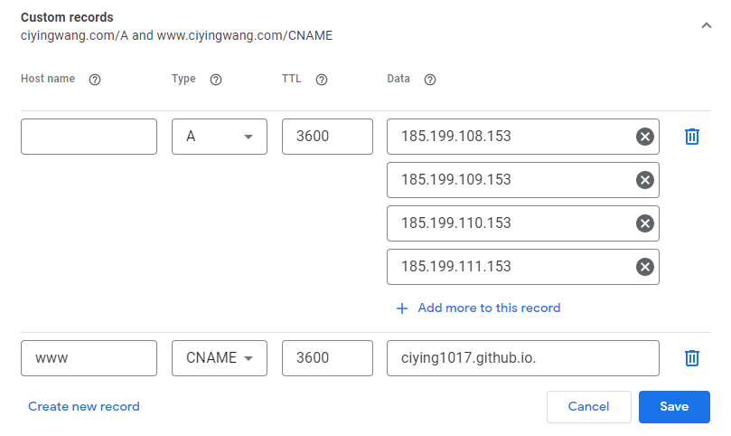

This website is built with html, css & js. The platform is github and editting platform is vscode. I am a total starter so it did took me some time to understand the languages and the architecture. Here is how I started the exploration.
1.Previously I've tried wix and wordpress, but neither of them could achieve the flexibility and customisation that I wanted.So I decided to try github. Create a new repository in Github named CIYING. Choose ‘add a README file’.
2. Click on ‘settings’ and change the ‘sources’ to ‘main’. In ‘Settings ‘-‘Pages’ I can choose a template and publish the website. Here the site name is https://ciying1017.github.io/CIYING/.
3. Log on to google domain and purchase the desired domain name. Here I bought www.ciyingwang.com. The price of 10 pounds/year is fair. Google domain also provides platforms where you can set up and edit your webpage.
4. In I want to change the URL to www.ciyingwang.com but the DNS checking says

5. Log on to google domain. In ‘DNS’ – ‘custom records’, type in the following

6. It will take a long time for the change to take place. Change URL in github-settings-pages again, and this message comes up

7. According to the message I have to add another record on my google DNS. I don’t know what the difference is between ALIAS and CNAME, so I’ll just add A record. The IP addresses can be found on Github ‘manage custom domain’ documentation.

8. When changing the URL in Github it still doesn’t work. It took about 30 min to propagate. Finally the URL is successfully changed to the desired domain.
9. Then time to design the webpage. The style I wanted to achieve was like https://xiaohegithub.cn/ , which looks geeky and simplistic. The website should leave room for future develpment, so I prefer the form of having multiple html files & external links (so that I can experiment with different styles on different pages). What I don’t want to achieve is like https://html5up.net/massively, which looks cool but actually is a mess.
10. Before figuring out the detailed process of coding and setting up all the functions I wanted to have, I thought it would be more realistic to use existing templates first and then modified it.
11. The webpage https://html5up.net/ provides some good template. I downloaded and unzipped one and loaded it onto my repository.
12. Go to index.html and change the codes inside. It’s pretty straightforward.
13. Modifying other people's codes is a strenuous process. Sometimes harder than writing my own codes.
14. So I then start studying html language (there are tons of tutorials on Youtube and it merely takes 2 hours to master the basics). And then css and javascript.